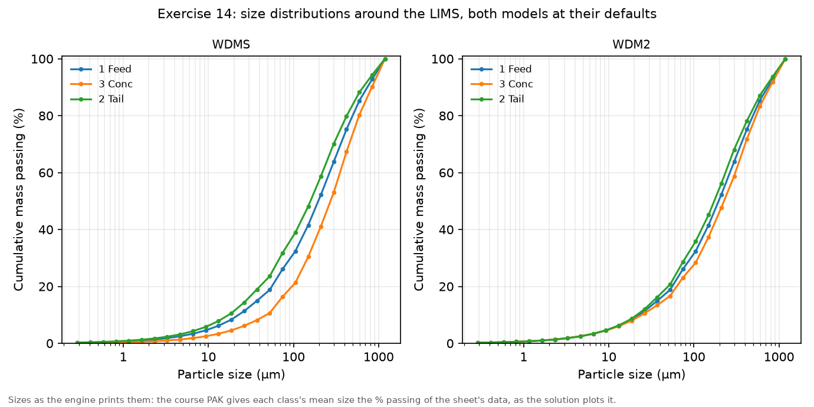
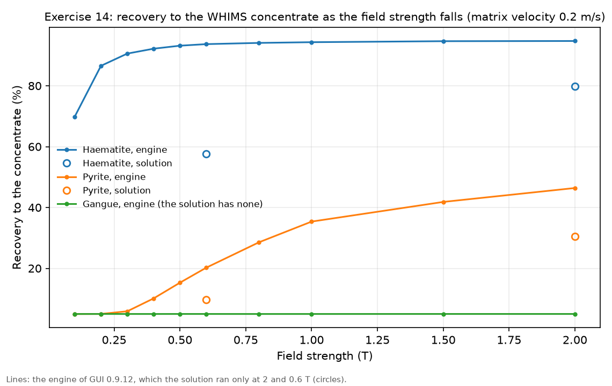
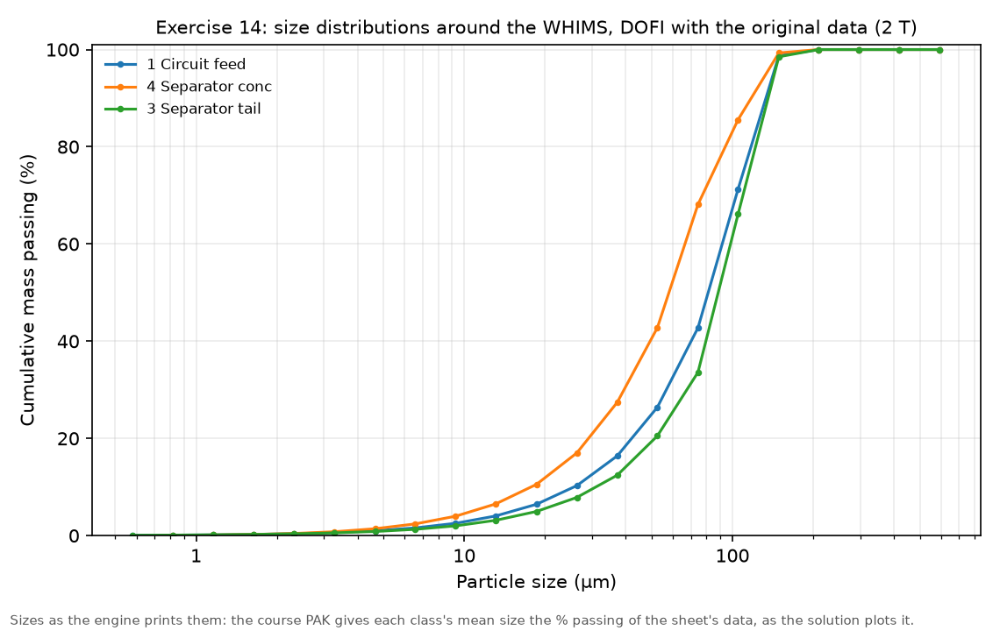

Exercise 14: models for magnetic separation
module 6 · King 8 (magnetic separation)
Read in King: King 8 · Magnetic separation · p. 257
The exercise sheet and the worked files live on the PC copy of Malla; the sheet's numbers are transcribed in this guide.
On this page
What they ask
The sheet is Ex_14.pdf (Bertil Pålsson, 2005-12-04, two pages). It shows what MODSIM's library can and cannot do for magnetic separators. There are no real models for dry magnetic separators, the sheet warns, although the simpler ones can be used with care.
2.1 A low-intensity magnetic separator (LIMS). One LIMS, with the feed and the products connected to the right places on the unit. The feed is a perfectly liberated iron ore of gangue and magnetite (density 5.2, 72.4 % Fe), 30 t/h at 40 % solids, largest particle 1 mm, with these sieve analyses:
| Size (µm) | Weight % | % Fe |
|---|---|---|
| 295 | 36.5 | 38.1 |
| 104 | 31.4 | 31.9 |
| 74 | 6.1 | 25.3 |
| 56 | 6.2 | 25.6 |
| 45 | 3.3 | 23.5 |
| 35 | 2.0 | 21.4 |
| 19 | 6.0 | 18.2 |
| < 19 | 8.5 | 18.2 |
With the simple model WDMS at its defaults: (1) what does the model assume about the minerals and the water, and is it reasonable? (2) Double the short-circuit: what happens? (3) Do the size distributions change? Then with the somewhat more advanced WDM2 at its defaults: (4) how do the minerals and the water split now, and is it reasonable? (5) Double the short-circuit. (6) Do the size distributions change?
2.2 A high-intensity magnetic separator (WHIMS). One WHIMS, again with the streams on the right ports. The feed is a perfectly liberated hematite ore with a little pyrite and gangue, 60 t/h at 40 % solids, largest particle 500 µm:
| Size (µm) | Weight % | % Fe₂O₃ | % FeS₂ |
|---|---|---|---|
| 150 | 1.1 | 4.2 | 9.0 |
| 108 | 26.9 | 4.4 | 8.0 |
| 75 | 28.7 | 9.0 | 7.0 |
| 63 | 9.9 | 18.5 | 6.0 |
| 38 | 16.5 | 38.2 | 5.0 |
| < 38 | 16.9 | 43.8 | 4.0 |
The ore has 3 grade classes, with the magnetic susceptibilities of King's Table 8.2. With the DOFI model at its defaults: (1) how are the minerals recovered, and is that reasonable given the water balance and the size distributions? (2) Lower the field strength step by step until at most 10 % of the pyrite reaches the concentrate: what else happens? (3) At that field, double the throughput: any difference?
How the work flows
Two separators, two ores, and in each a few runs where one value changes. The LIMS part compares two models of the same drum: WDMS at its defaults and with the short-circuit doubled, then WDM2 the same way, and each run is read three ways (minerals, water, sizes). The WHIMS part has a loop: the field comes down one step per run until the pyrite in the concentrate falls to 10 %, and then the throughput doubles at that field.
- Fixed for every run of a part: its ore, with its minerals, its grade classes and its size data, and its feed rate and % solids.
- Chosen once: the unit and the model, and for the hematite ore the susceptibilities of King's Table 8.2.
- Turned: the LIMS's short-circuit and its model; the WHIMS's field, then its throughput.
- Read after each run: the recovery of every mineral, the concentrate's grade, where the water goes, and the size curves of feed and products.
- Compared at the end: what each model assumes, and whether its answers are reasonable.
| Run | What you change | What you read | When to stop |
|---|---|---|---|
| WDMS | Nothing: the model at its defaults | Recovery of magnetite and gangue, the concentrate's % Fe and % solids, the size curves | One run |
| WDMS, short-circuit doubled | The by-pass fraction, 0.2 to 0.4 | The same | One run |
| WDM2, and doubled | The model; then its by-pass to non-mags, 0.3 to 0.6 | The same, and the water split | Two runs |
| WHIMS field | The field strength, down from 2 T | Every mineral's recovery, the concentrate's % Fe | When at most 10 % of the pyrite reaches the concentrate |
| WHIMS throughput | The interstitial velocity, 0.2 to 0.4 m/s | The same | One run |
How to check a run
- The feed. The magnetite ore carries about 30.9 % Fe, 42.7 % magnetite; the hematite ore about 19.4 % Fe₂O₃ and 6.4 % FeS₂ (see Before MODSIM).
- The ports. The sheet stresses it twice: a separator whose magnetic and non-magnetic outlets are swapped gives a "concentrate" poorer than its feed.
- The water. Every product's % solids against the model's water rule: WDMS sends a fixed 80 % of the feed water to the tailing, WDM2 has a field for it, and DOFI leaves a fixed moisture on the magnetic product.
- The balance. Iron in equals iron out, product by product.
Why (the engineering)
What a magnetic separator does. A particle in a magnetic field that changes with position feels a force proportional to its magnetic susceptibility, how strongly it magnetises, times the field and the field's gradient. Magnetite is ferromagnetic and responds to a weak field, so a low-intensity drum separator picks it up with permanent magnets. Hematite is only paramagnetic, about a hundred times weaker, so it needs a high-intensity separator whose matrix of steel wool or grooved plates creates steep local gradients. Pyrite is weaker still, and quartz is diamagnetic, slightly repelled (King, chapter 8).
King's Table 8.2 gives the susceptibilities in m³/kg: hematite , pyrite , quartz . Hematite is about 70 times more susceptible than pyrite, which is why lowering the field loses pyrite long before hematite. The course file takes for its gangue.
Three models, three kinds of assumption. WDMS takes everything magnetic to the concentrate except a by-pass that depends on size, and sends a fixed share of the water to the tailing. WDM2 adds a selection function with a sharpness and a size parameter, and a field for the water split. DOFI, the WHIMS model, computes whether each particle is captured by the matrix from its susceptibility, the field, the matrix's saturation and the velocity of the pulp through it: a faster flow drags particles off the matrix.
Before MODSIM: numbers by hand
The magnetite ore. Weighting the Fe of each size fraction by its weight gives 0.365 × 38.1 + 0.314 × 31.9 + … + 0.085 × 18.2 = 30.9 % Fe, and since magnetite holds 72.4 % Fe, the ore is 30.9 / 72.4 = 42.7 % magnetite, 12.8 t/h of the 30 t/h. The coarse fractions are the rich ones (38.1 % Fe at 295 µm against 18.2 % below 19 µm), so a separator that takes the magnetite will take coarse material.
WDMS's water, by hand. The feed brings 30 × 60/40 = 45 m³/h of water. WDMS sends 80 % of it, 36 m³/h, to the tailing, whatever else happens, so the concentrate gets 9 m³/h. With 11.1 t/h of concentrate, that is 11.1 / (11.1 + 9) = 55 % solids, the report's 55.2 %.
WDMS's tailing, by hand. The concentrate is pure magnetite, so its 11.1 t/h carry 8.04 t/h of the feed's 9.27 t/h of iron. The rest, 1.23 t/h of iron in 18.9 t/h of tailing, is 6.5 % Fe, close to the report's 6.38 %; the difference is the rounding of 11.1 t/h.
The hematite ore. The same weighting gives 19.4 % Fe₂O₃ and 6.4 % FeS₂, so the feed carries 19.4 × 0.699 + 6.4 × 0.466 = 16.5 % Fe, and the fine fractions are the rich ones this time (43.8 % Fe₂O₃ below 38 µm).
Why doubling the throughput is a velocity. DOFI has no field for the feed rate; what a doubled throughput changes in the machine is the speed of the pulp through the matrix. So "double the throughput" is the interstitial velocity from 0.2 to 0.4 m/s, which the solution uses too.
Step by step in MODSIM
The ready-made projects: not in the Examples folder yet, and why
The PC copy of Malla has this exercise solved on the MODSIM engine in Simulation of Mineral Processing/Examples/14 Magnetic separation/: the four LIMS cases, the WHIMS cases, a sweep of the field the solution does not run, the answers to the sheet's questions and three figures. The projects to open in the GUI are not there yet.
- Why. Both ores need a material whose grade changes with size, and the hematite ore adds a susceptibility for each grade class; no project saved by GUI 0.9.12 shows yet how the GUI stores either. Saving WHIMSsimple.PAK once from the GUI as a project shows it, and then the LIMS and WHIMS cases join the folder, each checked against the engine's runs.
- Meanwhile. LIMS.PAK, LIMS2.PAK and WHIMSsimple.PAK open in the GUI with everything defined.
The LIMS: a Wet Drum Mag Separator, with the streams on the right ports
GUI: File > New project; place Mixer-1 and a Wet Drum Mag Separator; draw Feed > Mixer-1 > separator, magnetic product > "Concentrate", non-magnetic product > "Tailing"The magnetite ore: two minerals, the grade by size, up to 1 mm
Material Definition as in Exercise 10, with these values; Confirm & Finish; saveHow to fill this window
- Components = magnetite 5.2 (72.4 % Fe), gangue 2.7
- Grades = two classes, each 100 % of one mineral (the ore is liberated)
- Size_Conv. = largest particle size 0.001 m
- Feed = 30 t/h at 40 % solids; the sieve analysis as the PSD; the grade distribution per size from the % Fe of each fraction (magnetite = % Fe / 72.4)
WDMS at its defaults, then with the by-pass doubled
Double-click the separator > WDMS (the default) > leave the fields as they are; Run; then by-pass fraction 0.4, Run; plot the size curves of feed, concentrate and tailingWet Drum Mag Separator → WDMS, wet drum magnetic separator: three fields
- Exponent for recovery curve (n) = 2.5, the default.
- By-pass fraction (α₀) = 0.2, the default: the share of the magnetic material that slips past the drum. Item 2 doubles it to 0.4.
- Exponent for effect of size on bypass (β) = 1.5, the default: how the by-pass changes with particle size.
- There is no field for the water: the model always sends 80 % of the feed water to the tailing.
WDM2 at its defaults, then with the short-circuit doubled
Model: WDM2 > defaults; Run; then bypass to non-mags 0.6, Run; plot the size curvesWet Drum Mag Separator → WDM2, wet drum mag separator (5-param): five fields
- Sharpness index (α) = 0.75, the default: how sharp the selection function is.
- Gv 50% parameter = 0.05, the default: the point of the selection function where half is taken.
- Bypass to non-mags (α₀) = 0.3, the default; item 5 doubles it to 0.6.
- Bypass size-decay coeff = 20, the default: how fast the by-pass fades with size.
- Water split to tail = 0.8, the default: now a field rather than a fixed rule.
The WHIMS: a new flowsheet and the hematite ore with its susceptibilities
New project; Mixer-1 and a WHIMS, magnetic product > "Concentrate", non-magnetic > "Tailing"; Material Definition with the values belowHow to fill this window
- Components = gangue 2.7, pyrite 5.0, hematite 5.1, each with its magnetic susceptibility in m³/kg (King's Table 8.2: hematite 2.59E-7, pyrite 3.57E-9, gangue -5.0E-9 as the course file, or quartz's -6.19E-9)
- Grades = three classes, each 100 % of one mineral
- Size_Conv. = largest particle size 0.0005 m
- Feed = 60 t/h at 40 % solids; the sieve analysis as the PSD; the Fe₂O₃ and FeS₂ of each fraction as its grade distribution, gangue the rest
DOFI at its defaults, then lower the field step by step
Double-click the WHIMS > DOFI (the only model) > defaults; Run; then field strength 1.5, 1.0, 0.8, 0.6, 0.5, 0.4, 0.3 T, one run each, logging every mineral's recovery; stop when the pyrite in the concentrate is at most 10 %WHIMS → DOFI, WHIMS: eight fields
- Magnetic field strength (B) = 2 T, the default; item 2 lowers it.
- Matrix saturation Ms (Ms) = 1 T, the default.
- Interstitial velocity (U) = 0.2 m/s, the default: the speed of the pulp through the matrix. Item 3 doubles the throughput by doubling it to 0.4.
- Matrix loading fraction (Lm) = 0.8, the default.
- M50 (small-particle branch) (M50,s) = 0.0127 and M50 (large-particle branch) (M50,l) = 0.0127, the defaults. The course file WHIMSsimple.PAK carries only one M50, which on this engine shifts every later value by one place; the GUI's window has both, which is what the engine reads.
- Residual water on mags (w) = 10 %, the default: the magnetic product leaves at 90 % solids.
- Units in parallel (n) = 1.
At that field, double the throughput
Keep the field of step 6; interstitial velocity 0.4 m/s; RunExpected results
The engine of GUI 0.9.12 reproduces the suggested solution SolEx_14.pdf for WDMS; its WDM2 and DOFI treat the same ores differently from the engine the solution used. In every pair the engine's number comes first and the solution's second.
The LIMS.
| Case | Concentrate t/h | % solids | % Fe | Tailing % Fe | Magnetite recovery % | Gangue recovery % |
|---|---|---|---|---|---|---|
| WDMS, defaults | 11.1 / 11.1 | 55.2 / 55.2 | 72.4 / 72.4 | 6.38 / 6.38 | 87.1 / 86.97 | 0 / 0 |
| WDMS, by-pass doubled | 9.43 / 9.45 | 51.2 / 51.2 | 72.4 / 72.4 | 11.7 / 11.7 | 73.8 / 73.95 | 0 / 0 |
| WDM2, defaults | 13.9 / 18.9 | 60.6 / 67.8 | 66.8 / 47.2 | 0 / 2.85 | 100 / 96.59 | 6.27 / 38.27 |
| WDM2, short-circuit doubled | 14.9 / 18.1 | 62.4 / 66.7 | 61.9 / 47.7 | 0 / 5.28 | 100 / 93.18 | 12.5 / 35.71 |
- WDMS's assumptions (item 1). Everything magnetic goes to the concentrate, which is pure magnetite, and 80 % of the water goes to the tailing whatever the parameters. Reasonable only as a first estimate: a real LIMS loses some fine magnetite and carries some gangue.
- The sizes (items 3 and 6). The concentrate is coarser than the feed ( of 272 µm against 196 µm with WDMS), partly a classifying effect of the model and partly the ore itself, whose magnetite sits in the coarse fractions.
- WDM2 (items 4 and 5). The water split becomes a field. The solution's 38 % of the gangue in the concentrate of a liberated ore is hard to call reasonable, and so is the engine's tailing with no iron at all; in the solution, doubling the short-circuit raised the tailing's Fe, as one expects, while on this engine it carries gangue into the concentrate.

The WHIMS.
| Case | Concentrate t/h | % Fe | Hematite recovery % | Pyrite recovery % | Gangue recovery % |
|---|---|---|---|---|---|
| 2 T | 15.9 / 11.3 | 58.6 / 68.4 | 94.7 / 79.89 | 46.4 / 30.53 | 5 / 0 |
| 0.6 T | 14.8 / 7.67 | 59.3 / 69.7 | 93.7 / 57.64 | 20.2 / 9.69 | 5 / 0 |
| 0.6 T, velocity 0.4 m/s | 14.2 / 5.12 | 59.5 / 70.7 | 92.2 / 40.2 | 9.11 / 0.61 | 5 / 0 |
- The first run (item 1). The concentrate leaves at 90.9 % solids, set by the residual water on the magnetic product. It comes out finer than the tailing ( 58 against 89 µm), the opposite of a LIMS, which the solution puts down to the matrix flush washing out some coarse magnetic particles; it also follows from this ore, whose hematite sits in the fine fractions.
- The field (item 2). Lowering it loses pyrite first and makes the concentrate richer; the engine needs a little under 0.4 T where the solution needs 0.6 T, and its hematite hardly responds to the field.
- The throughput (item 3). More flow washes out more pyrite on both engines.


Common mistakes
- Swapped ports. A magnetic product connected as the non-magnetic one gives a concentrate poorer than its feed.
- Susceptibilities without their exponent or sign. Hematite is 2.59E-7 m³/kg, not 259; the gangue is negative.
- Looking for the water in WDMS's window. There is none: 80 % of the water goes to the tailing, always.
- Doubling the feed tonnage for item 3. DOFI reads the flow through the matrix, the interstitial velocity.
- Typing the course file's seven DOFI values into the engine. The GUI's window has the eight the engine reads; the course file's seven shift everything after the M50.
- Expecting WDM2 and DOFI to land on the solution. On this engine they do not; compare the directions.
Sensitivity analysis
- The by-pass of WDMS. From 0.2 to 0.4 the magnetite recovery falls from 87.1 to 73.8 %, and the concentrate stays pure.
- The WHIMS field. From 2 to 0.3 T on the engine, the pyrite recovery falls from 46.4 to 5.9 % while the hematite's only falls from 94.7 to 90.6 %; below 0.2 T the hematite goes too (69.8 % at 0.1 T).
- The velocity through the matrix. Doubled at 0.6 T, it roughly halves the pyrite in the concentrate on the engine.
Hand-in checklist
Nothing of this exercise is graded, but the sheet asks to show: